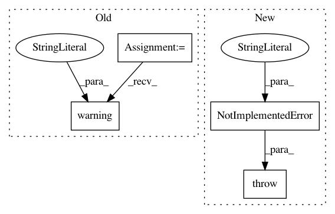

3a6a7e8b09d8a76ad117dbecfa505653f4f93acf,art/attacks/evasion/projected_gradient_descent/projected_gradient_descent_pytorch.py,ProjectedGradientDescentPyTorch,__init__,#ProjectedGradientDescentPyTorch#Any#Any#Any#Any#Any#Any#Any#Any#Any#,52
Before Change
if (hasattr(estimator, "preprocessing") and estimator.preprocessing is not None) or (
hasattr(estimator, "preprocessing_defences") and estimator.preprocessing_defences is not None
):
logging.warning(
"The framework-specific implementation currently does not apply preprocessing and "
"preprocessing defences."
)
super(ProjectedGradientDescentPyTorch, self).__init__(
estimator=estimator,
norm=norm,
After Change
if (hasattr(estimator, "preprocessing") and estimator.preprocessing is not None) or (
hasattr(estimator, "preprocessing_defences") and estimator.preprocessing_defences is not None
):
raise NotImplementedError(
"The framework-specific implementation currently does not apply preprocessing and "
"preprocessing defences."
)
super(ProjectedGradientDescentPyTorch, self).__init__(
estimator=estimator,
norm=norm,
In pattern: SUPERPATTERN
Frequency: 3
Non-data size: 4
Instances
Project Name: IBM/adversarial-robustness-toolbox
Commit Name: 3a6a7e8b09d8a76ad117dbecfa505653f4f93acf
Time: 2020-05-22
Author: beat.buesser@ie.ibm.com
File Name: art/attacks/evasion/projected_gradient_descent/projected_gradient_descent_pytorch.py
Class Name: ProjectedGradientDescentPyTorch
Method Name: __init__
Project Name: IBM/adversarial-robustness-toolbox
Commit Name: 3a6a7e8b09d8a76ad117dbecfa505653f4f93acf
Time: 2020-05-22
Author: beat.buesser@ie.ibm.com
File Name: art/attacks/evasion/projected_gradient_descent/projected_gradient_descent_tensorflow_v2.py
Class Name: ProjectedGradientDescentTensorFlowV2
Method Name: __init__
Project Name: RaRe-Technologies/gensim
Commit Name: 1aa7e115fcf87b443373c14b7b2f3dd2e3383584
Time: 2011-02-19
Author: radimrehurek@seznam.cz
File Name: src/gensim/interfaces.py
Class Name: CorpusABC
Method Name: __len__